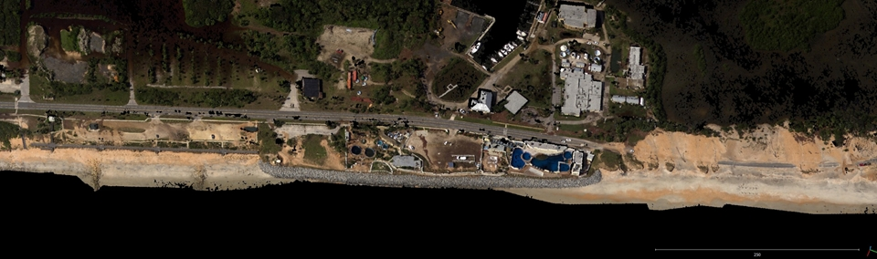
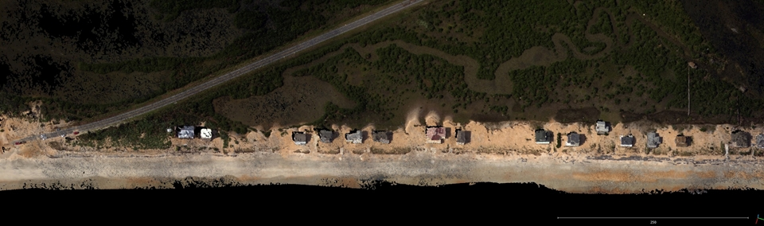
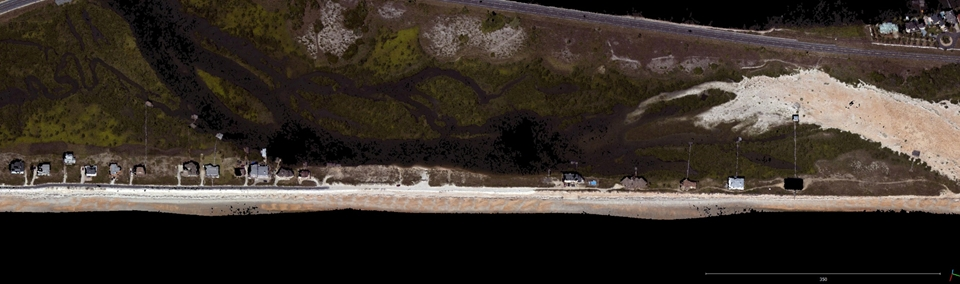
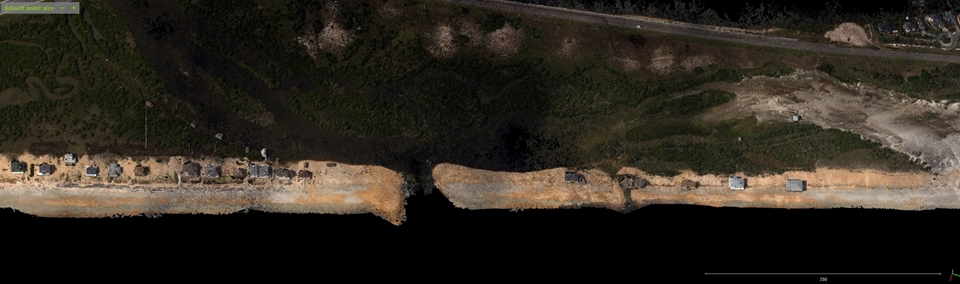

Florida Coast south of Matanzas Inlet before and after Hurricane Matthew
These images are orthophoto mosiacs made from NOAA oblique aerial photos taken in 2015 and 2016.
The jQuery BeforeAfter plugin allows you to take two images and merge them so that a visitor can drag a slider over them to visually compare them.
Grab and drag the handle to compare images.





